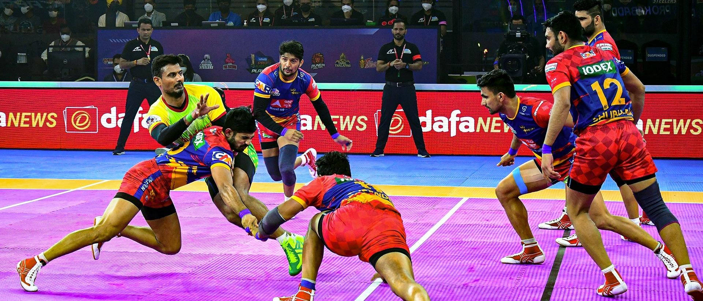

Thanthi periyar govrnment arts&science college(autonomous)
Tirucirappalli - 620 023 Tamilnadu,India.
Events(sports&culutrel)

KABADDI
Kabaddi (also known as kaudi) is a contact team sport played between two teams of seven players. The objective of the game is for a single player on offense,
referred to as a "raider", to run into the opposing team's half of the court, touch out as many of their players and return to their own half of the court,
all without being tackled by the defenders in 30 seconds. Points are scored for each player tagged by the raider, while the opposing team earns a point for
Players are taken out of the game if they are touched or tackled, but are brought back in for each point scored by their team from a tag or a tackle.
Kabaddi (also known as kaudi) is a contact team sport played between two teams of seven players. The objective of the game is for a single player on offense,
referred to as a "raider", to run into the opposing team's half of the court, touch out as many of their players and return to their own half of the court,
all without being tackled by the defenders in 30 seconds. Points are scored for each player tagged by the raider, while the opposing team earns a point for the raider.
Players are taken out of the game if they are touched or tackled, but are brought back in for each point scored by their team from a tag or a tackle.
CRICKET
The sport of cricket has a known history beginning in the late 16th century. Having originated in south-east England, it became an established sport in the country in the 18th century and developed globally in the 19th and 20th centuries. International matches have been played since the 19th-century and formal Test cricket matches are considered to date from 1877. Cricket is the world's second most popular spectator sport after association football (soccer).[1]
Internationally, cricket is governed by the International Cricket Council (ICC), which has over one hundred countries and territories in membership although only twelve currently play Test cricket.
The game's rules are defined in the "Laws of cricket". The game has various formats, ranging from T-10(Ten-10) played in around 90 minutes to Test matches which can last up to five days.
Athletics
Athletics is a group of sporting events that involves competitive running, jumping, throwing, and walking.[1] The most common types of athletics competitions are track and field, road running, cross-country running, and racewalking.
The results of racing events are decided by finishing position (or time, where measured), while the jumps and throws are won by the athlete that achieves the highest or furthest measurement from a series of attempts. The simplicity of the competitions, and the lack of a need for expensive equipment, makes athletics one of the most common types of sports in the world. Athletics is mostly an individual sport, with the exception of relay races and competitions which combine athletes' performances for a team score, such as cross country.
Organized athletics are traced back to the Ancient Olympic Games from 776 BC. The rules and format of the modern events in athletics were defined in Western Europe and North America in the 19th and early 20th century, and were then spread to other parts of the world. Most modern top level meetings are held under the auspices of World Athletics, the global governing body for the sport of athletics, or its member continental and national federations.
The athletics meeting forms the backbone of the Summer Olympics. The foremost international athletics meeting is the World Athletics Championships, which incorporates track and field, marathon running and race walking. Other top level competitions in athletics include the World Athletics Cross Country Championships and the World Half Marathon Championships. Athletes with a physical disability compete at the Summer Paralympics and the World Para Athletics Championships.
The word athletics is derived from the Ancient Greek ἀθλητής (athlētēs, "combatant in public games") from ἆθλον (athlon, "prize") or ἆθλος (athlos, "competition").[2] Initially, the term described athletic contests in general – i.e. sporting competition based primarily on human physical feats. In the 19th century, the term athletics acquired a more narrow definition in Europe and came to describe sports involving competitive running, walking, jumping and throwing. This definition continues to be prominent in the United Kingdom and the former British Empire. Related words in Germanic and Romance languages also have a similar meaning.
In much of North America, athletics is synonymous with sports in general, maintaining the historical usage of the term. The word "athletics" is rarely used to refer to the sport of athletics in this region. Track and field is preferred, and is used in the United States and Canada to refer to athletics events, including race-walking and marathon running (although cross country running is typically considered a separate sport).

valley ball
volleyball, game played by two teams, usually of six players on a side, in which the players use their hands to bat a ball back and forth over a high net, trying to make the ball touch the court within the opponents’ playing area before it can be returned. To prevent this a player on the opposing team bats the ball up and toward a teammate before it touches the court surface—that teammate may then volley it back across the net or bat it to a third teammate who volleys it across the net. A team is allowed only three touches of the ball before it must be returned over the net.
Volleyball was invented in 1895 by William G. Morgan, physical director of the Young Men’s Christian Association (YMCA) in Holyoke, Massachusetts. It was designed as an indoor sport for businessmen who found the new game of basketball too vigorous. Morgan called the sport “mintonette,” until a professor from Springfield College in Massachusetts noted the volleying nature of play and proposed the name of “volleyball.” The original rules were written by Morgan and printed in the first edition of the Official Handbook of the Athletic League of the Young Men’s Christian Associations of North America (1897). The game soon proved to have wide appeal for both sexes in schools, playgrounds, the armed forces, and other organizations in the United States, and it was subsequently introduced to other countries.